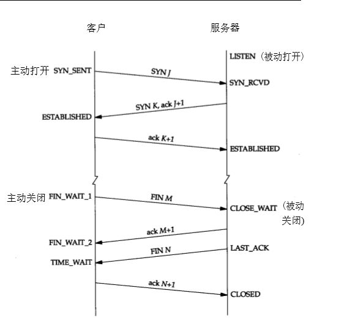

<!DOCTYPE HTML>
<html lang="zh-hans" >
    <head>
        <meta charset="UTF-8">
        <meta content="text/html; charset=utf-8" http-equiv="Content-Type">
        <title>Tcp · Java面试知识点</title>
        <meta http-equiv="X-UA-Compatible" content="IE=edge" />
        <meta name="description" content="">
        <meta name="generator" content="GitBook 3.2.3">
        <meta name="author" content="Bin Zhang & Yifan Xu">
        
        
    
    <link rel="stylesheet" href="../gitbook/style.css">

    
            
                
                <link rel="stylesheet" href="../gitbook/gitbook-plugin-highlight/website.css">
                
            
                
                <link rel="stylesheet" href="../gitbook/gitbook-plugin-search/search.css">
                
            
                
                <link rel="stylesheet" href="../gitbook/gitbook-plugin-fontsettings/website.css">
                
            
        

    

    
        
    
        
    
        
    
        
    
        
    
        
    

        
    
    
    <meta name="HandheldFriendly" content="true"/>
    <meta name="viewport" content="width=device-width, initial-scale=1, user-scalable=no">
    <meta name="apple-mobile-web-app-capable" content="yes">
    <meta name="apple-mobile-web-app-status-bar-style" content="black">
    <link rel="apple-touch-icon-precomposed" sizes="152x152" href="../gitbook/images/apple-touch-icon-precomposed-152.png">
    <link rel="shortcut icon" href="../gitbook/images/favicon.ico" type="image/x-icon">

    
    <link rel="next" href="http.html" />
    
    
    <link rel="prev" href="数据通信(RESTful、RPC、消息队列" />
    

    </head>
    <body>
        
<div class="book">
    <div class="book-summary">
        
            
<div id="book-search-input" role="search">
    <input type="text" placeholder="输入并搜索" />
</div>

            
                <nav role="navigation">
                


<ul class="summary">
    
    

    

    
        
        
    
        <li class="chapter " data-level="1.1" data-path="../">
            
                <a href="../">
            
                    
                    Introduction
            
                </a>
            

            
        </li>
    
        <li class="chapter " data-level="1.2" >
            
                <span>
            
                    
                    [Java相关]
            
                </span>
            

            
            <ul class="articles">
                
    
        <li class="chapter " data-level="1.2.1" data-path="../Java相关/ArrayList.html">
            
                <a href="../Java相关/ArrayList.html">
            
                    
                    ArrayList
            
                </a>
            

            
        </li>
    
        <li class="chapter " data-level="1.2.2" data-path="../Java相关/HashMap.html">
            
                <a href="../Java相关/HashMap.html">
            
                    
                    HashMap
            
                </a>
            

            
        </li>
    
        <li class="chapter " data-level="1.2.3" data-path="../Java相关/LinkedList.html">
            
                <a href="../Java相关/LinkedList.html">
            
                    
                    LinkedList
            
                </a>
            

            
        </li>
    
        <li class="chapter " data-level="1.2.4" data-path="../Java相关/J2EE基础知识.html">
            
                <a href="../Java相关/J2EE基础知识.html">
            
                    
                    J2EE基础
            
                </a>
            

            
        </li>
    
        <li class="chapter " data-level="1.2.5" data-path="../Java相关/Java IO与NIO.html">
            
                <a href="../Java相关/Java IO与NIO.html">
            
                    
                    Java IO
            
                </a>
            

            
        </li>
    
        <li class="chapter " data-level="1.2.6" data-path="../Java相关/Java基础知识.html">
            
                <a href="../Java相关/Java基础知识.html">
            
                    
                    Java基础知识
            
                </a>
            

            
        </li>
    
        <li class="chapter " data-level="1.2.7" data-path="../Java相关/Java虚拟机（jvm）.html">
            
                <a href="../Java相关/Java虚拟机（jvm）.html">
            
                    
                    Java虚拟机（jvm）
            
                </a>
            

            
        </li>
    
        <li class="chapter " data-level="1.2.8" data-path="../Java相关/搞定JVM垃圾回收就是这么简单.html">
            
                <a href="../Java相关/搞定JVM垃圾回收就是这么简单.html">
            
                    
                    Java 垃圾回收
            
                </a>
            

            
        </li>
    
        <li class="chapter " data-level="1.2.9" data-path="../Java相关/可能是把Java内存区域讲的最清楚的一篇文章.html">
            
                <a href="../Java相关/可能是把Java内存区域讲的最清楚的一篇文章.html">
            
                    
                    Java 内存
            
                </a>
            

            
        </li>
    
        <li class="chapter " data-level="1.2.10" data-path="../Java相关/多线程系列.html">
            
                <a href="../Java相关/多线程系列.html">
            
                    
                    Java 多线程
            
                </a>
            

            
        </li>
    
        <li class="chapter " data-level="1.2.11" data-path="../Java相关/thread-safe.html">
            
                <a href="../Java相关/thread-safe.html">
            
                    
                    Java 线程安全
            
                </a>
            

            
        </li>
    
        <li class="chapter " data-level="1.2.12" data-path="../Java相关/Java集合框架常见面试题总结.html">
            
                <a href="../Java相关/Java集合框架常见面试题总结.html">
            
                    
                    Java集合框架常见面试题总结1
            
                </a>
            

            
        </li>
    
        <li class="chapter " data-level="1.2.13" data-path="../Java相关/这几道Java集合框架面试题几乎必问.html">
            
                <a href="../Java相关/这几道Java集合框架面试题几乎必问.html">
            
                    
                    Java集合框架常见面试题总结2
            
                </a>
            

            
        </li>
    
        <li class="chapter " data-level="1.2.14" data-path="../Java相关/设计模式.html">
            
                <a href="../Java相关/设计模式.html">
            
                    
                    设计模式
            
                </a>
            

            
        </li>
    

            </ul>
            
        </li>
    
        <li class="chapter " data-level="1.3" >
            
                <span>
            
                    
                    [Spring相关]
            
                </span>
            

            
            <ul class="articles">
                
    
        <li class="chapter " data-level="1.3.1" data-path="../主流框架/Spring学习与面试.html">
            
                <a href="../主流框架/Spring学习与面试.html">
            
                    
                    Spring
            
                </a>
            

            
        </li>
    

            </ul>
            
        </li>
    
        <li class="chapter " data-level="1.4" data-path="../操作系统/后端程序员必备的Linux基础知识.html">
            
                <a href="../操作系统/后端程序员必备的Linux基础知识.html">
            
                    
                    Linux
            
                </a>
            

            
        </li>
    
        <li class="chapter " data-level="1.5" >
            
                <span>
            
                    
                    [数据库]
            
                </span>
            

            
            <ul class="articles">
                
    
        <li class="chapter " data-level="1.5.1" data-path="../数据存储/MySQL/MySQL.html">
            
                <a href="../数据存储/MySQL/MySQL.html">
            
                    
                    Mysql
            
                </a>
            

            
            <ul class="articles">
                
    
        <li class="chapter " data-level="1.5.1.1" data-path="../数据存储/MySQL/Engine.html">
            
                <a href="../数据存储/MySQL/Engine.html">
            
                    
                    存储引擎
            
                </a>
            

            
        </li>
    
        <li class="chapter " data-level="1.5.1.2" data-path="../数据存储/MySQL/Index.html">
            
                <a href="../数据存储/MySQL/Index.html">
            
                    
                    索引
            
                </a>
            

            
        </li>
    
        <li class="chapter " data-level="1.5.1.3" data-path="../数据存储/MySQL/SQL.html">
            
                <a href="../数据存储/MySQL/SQL.html">
            
                    
                    SQL优化
            
                </a>
            

            
        </li>
    
        <li class="chapter " data-level="1.5.1.4" data-path="../数据存储/MySQL/Transaction.html">
            
                <a href="../数据存储/MySQL/Transaction.html">
            
                    
                    事务
            
                </a>
            

            
        </li>
    

            </ul>
            
        </li>
    
        <li class="chapter " data-level="1.5.2" >
            
                <span>
            
                    
                    [Redis]
            
                </span>
            

            
            <ul class="articles">
                
    
        <li class="chapter " data-level="1.5.2.1" data-path="../数据存储/Redis.html">
            
                <a href="../数据存储/Redis.html">
            
                    
                    Redis 基础
            
                </a>
            

            
        </li>
    
        <li class="chapter " data-level="1.5.2.2" data-path="../数据存储/春夏秋冬又一春之Redis持久化.html">
            
                <a href="../数据存储/春夏秋冬又一春之Redis持久化.html">
            
                    
                    Redis 持久化精讲
            
                </a>
            

            
        </li>
    
        <li class="chapter " data-level="1.5.2.3" data-path="../数据存储/Redis常见知识点.html">
            
                <a href="../数据存储/Redis常见知识点.html">
            
                    
                    Redis 基础知识点汇总
            
                </a>
            

            
        </li>
    

            </ul>
            
        </li>
    

            </ul>
            
        </li>
    
        <li class="chapter " data-level="1.6" >
            
                <span>
            
                    
                    [分布式]
            
                </span>
            

            
            <ul class="articles">
                
    
        <li class="chapter " data-level="1.6.1" data-path="../架构/distributed.html">
            
                <a href="../架构/distributed.html">
            
                    
                    分布式锁
            
                </a>
            

            
        </li>
    
        <li class="chapter " data-level="1.6.2" data-path="../架构/分布式.html">
            
                <a href="../架构/分布式.html">
            
                    
                    分布式相关
            
                </a>
            

            
        </li>
    

            </ul>
            
        </li>
    
        <li class="chapter " data-level="1.7" >
            
                <span>
            
                    
                    [计算机网络相关]
            
                </span>
            

            
            <ul class="articles">
                
    
        <li class="chapter " data-level="1.7.1" data-path="干货：计算机网络知识总结.html">
            
                <a href="干货：计算机网络知识总结.html">
            
                    
                    网络基础
            
                </a>
            

            
        </li>
    
        <li class="chapter " data-level="1.7.2" data-path="数据通信(RESTful、RPC、消息队列">
            
                <span>
            
                    
                    数据通信
            
                </a>
            

            
        </li>
    
        <li class="chapter active" data-level="1.7.3" data-path="tcp.html">
            
                <a href="tcp.html">
            
                    
                    Tcp
            
                </a>
            

            
        </li>
    
        <li class="chapter " data-level="1.7.4" data-path="http.html">
            
                <a href="http.html">
            
                    
                    Http
            
                </a>
            

            
        </li>
    

            </ul>
            
        </li>
    

    

    <li class="divider"></li>

    <li>
        <a href="https://www.gitbook.com" target="blank" class="gitbook-link">
            本书使用 GitBook 发布
        </a>
    </li>
</ul>


                </nav>
            
        
    </div>

    <div class="book-body">
        
            <div class="body-inner">
                
                    

<div class="book-header" role="navigation">
    

    <!-- Title -->
    <h1>
        <i class="fa fa-circle-o-notch fa-spin"></i>
        <a href=".." >Tcp</a>
    </h1>
</div>


                    <div class="page-wrapper" tabindex="-1" role="main">
                        <div class="page-inner">
                            
<div id="book-search-results">
    <div class="search-noresults">
    
                                <section class="normal markdown-section">
                                
                                <h3 id="tcp&#x7684;&#x6ED1;&#x52A8;&#x7A97;&#x53E3;">TCP&#x7684;&#x6ED1;&#x52A8;&#x7A97;&#x53E3;</h3>
<p>&#x4E3A;&#x4E86;&#x63D0;&#x9AD8;&#x4FE1;&#x9053;&#x7684;&#x5229;&#x7528;&#x7387;TCP&#x534F;&#x8BAE;&#x4E0D;&#x4F7F;&#x7528;&#x505C;&#x6B62;&#x7B49;&#x5F85;&#x534F;&#x8BAE;&#xFF0C;&#x800C;&#x662F;&#x4F7F;&#x7528;&#x8FDE;&#x7EED;ARQ&#x534F;&#x8BAE;&#xFF0C;&#x610F;&#x601D;&#x5C31;&#x662F;&#x53EF;&#x4EE5;&#x8FDE;&#x7EED;&#x53D1;&#x51FA;&#x82E5;&#x5E72;&#x4E2A;&#x5206;&#x7EC4;&#x7136;&#x540E;&#x7B49;&#x5F85;&#x786E;&#x8BA4;&#xFF0C;&#x800C;&#x4E0D;&#x662F;&#x53D1;&#x9001;&#x4E00;&#x4E2A;&#x5206;&#x7EC4;&#x5C31;&#x505C;&#x6B62;&#x5E76;&#x7B49;&#x5F85;&#x8BE5;&#x5206;&#x7EC4;&#x7684;&#x786E;&#x8BA4;&#x3002;
TCP&#x7684;&#x4E24;&#x7AEF;&#x90FD;&#x6709;&#x53D1;&#x9001;/&#x63A5;&#x6536;&#x7F13;&#x5B58;&#x548C;&#x53D1;&#x9001;/&#x63A5;&#x6536;&#x7A97;&#x53E3;&#x3002;TCP&#x7684;&#x7F13;&#x5B58;&#x662F;&#x4E00;&#x4E2A;&#x5FAA;&#x73AF;&#x961F;&#x5217;&#xFF0C;&#x5176;&#x4E2D;&#x53D1;&#x9001;&#x7A97;&#x53E3;&#x53EF;&#x4EE5;&#x7528;3&#x4E2A;&#x6307;&#x9488;&#x8868;&#x793A;&#x3002;&#x800C;&#x53D1;&#x9001;&#x7A97;&#x53E3;&#x7684;&#x5927;&#x5C0F;&#x53D7;TCP&#x6570;&#x636E;&#x62A5;&#x4E2D;&#x7A97;&#x53E3;&#x5927;&#x5C0F;&#x7684;&#x5F71;&#x54CD;&#xFF0C;TCP&#x6570;&#x636E;&#x62A5;&#x4E2D;&#x7684;&#x7A97;&#x53E3;&#x5927;&#x5C0F;&#x662F;&#x63A5;&#x6536;&#x7AEF;&#x901A;&#x77E5;&#x53D1;&#x9001;&#x7AEF;&#x5176;&#x8FD8;&#x53EF;&#x4EE5;&#x63A5;&#x6536;&#x591A;&#x5C11;&#x6570;&#x636E;&#xFF0C;&#x6240;&#x4EE5;&#x53D1;&#x9001;&#x7A97;&#x53E3;&#x6839;&#x636E;&#x63A5;&#x6536;&#x7684;&#x7684;&#x7A97;&#x53E3;&#x5927;&#x5C0F;&#x7684;&#x503C;&#x52A8;&#x6001;&#x53D8;&#x5316;&#x3002;</p>
<h3 id="tcp&#x6D41;&#x91CF;&#x63A7;&#x5236;">TCP&#x6D41;&#x91CF;&#x63A7;&#x5236;</h3>
<p>&#x8FD0;&#x7528;TCP&#x62A5;&#x6587;&#x6BB5;&#x4E2D;&#x7684;&#x7A97;&#x53E3;&#x5927;&#x5C0F;&#x5B57;&#x6BB5;&#x6765;&#x63A7;&#x5236;&#xFF0C;&#x53D1;&#x9001;&#x65B9;&#x7684;&#x53D1;&#x9001;&#x7A97;&#x53E3;&#x4E0D;&#x53EF;&#x4EE5;&#x5927;&#x4E8E;&#x63A5;&#x6536;&#x65B9;&#x53D1;&#x56DE;&#x7684;&#x7A97;&#x53E3;&#x5927;&#x5C0F;&#x3002;TCP&#x4E3A;&#x6BCF;&#x4E00;&#x4E2A;&#x8FDE;&#x63A5;&#x8BBE;&#x7F6E;&#x4E00;&#x4E2A;&#x6301;&#x7EED;&#x8BA1;&#x65F6;&#x5668;&#x63A2;&#x6D4B;&#x7A97;&#x53E3;&#x503C;&#x907F;&#x514D;&#x6B7B;&#x9501;&#x3002;&#xFF08;&#x63A5;&#x6536;&#x65B9;&#x53D1;&#x9001;&#x975E;&#x96F6;&#x7A97;&#x53E3;&#x62A5;&#x6587;&#x5728;&#x9014;&#x4E2D;&#x4E22;&#x5931;&#xFF09;</p>
<h3 id="tcp&#x62E5;&#x585E;&#x63A7;&#x5236;">TCP&#x62E5;&#x585E;&#x63A7;&#x5236;</h3>
<ul>
<li>&#x62E5;&#x585E;&#x7A97;&#x53E3;&#xFF1A;&#x53D1;&#x9001;&#x65B9;&#x4E3A;&#x4E00;&#x4E2A;&#x52A8;&#x6001;&#x53D8;&#x5316;&#x7684;&#x7A97;&#x53E3;&#x53EB;&#x505A;&#x62E5;&#x585E;&#x7A97;&#x53E3;&#x3002;</li>
<li>&#x62E5;&#x585E;&#x907F;&#x514D;&#xFF1A;&#x53D1;&#x9001;&#x7A97;&#x53E3;&#x4F1A;&#x968F;&#x7740;&#x62E5;&#x585E;&#x7A97;&#x53E3;&#x7F13;&#x6162;&#x589E;&#x52A0;&#xFF08;+1&#xFF09;&#x3002;</li>
<li>&#x6162;&#x542F;&#x52A8;&#x7B97;&#x6CD5;&#xFF1A;&#x6BCF;&#x6536;&#x5230;&#x4E00;&#x4E2A;&#x786E;&#x8BA4;&#x62E5;&#x585E;&#x7A97;&#x53E3;&#x4FBF;&#x7FFB;&#x500D;&#x3002;&#x6162;&#x5F00;&#x59CB;&#x95E8;&#x9650;ssthresh&#x72B6;&#x6001;&#x53D8;&#x91CF;&#x9650;&#x5236;&#x4E0A;&#x9650;&#x503C;&#x3002;&#x4E5F;&#x662F;&#x62E5;&#x585E;&#x907F;&#x514D;&#x542F;&#x52A8;&#x503C;&#x3002;</li>
</ul>
<h3 id="tcp&#x7C98;&#x5305;&#x73B0;&#x8C61;&#xFF1F;">TCP&#x7C98;&#x5305;&#x73B0;&#x8C61;&#xFF1F;</h3>
<ul>
<li>&#x63CF;&#x8FF0;&#xFF1A;&#x53D1;&#x9001;&#x65B9;&#x53D1;&#x9001;&#x7684;&#x82E5;&#x5E72;&#x5305;&#x6570;&#x636E;&#x5230;&#x63A5;&#x6536;&#x65B9;&#x63A5;&#x6536;&#x65F6;&#x7C98;&#x6210;&#x4E00;&#x5305;&#xFF0C;&#x4ECE;&#x63A5;&#x6536;&#x7F13;&#x51B2;&#x533A;&#x770B;&#xFF0C;&#x540E;&#x4E00;&#x5305;&#x6570;&#x636E;&#x7684;&#x5934;&#x7D27;&#x63A5;&#x7740;&#x524D;&#x4E00;&#x5305;&#x6570;&#x636E;&#x7684;&#x5C3E;&#x3002;</li>
<li>&#x539F;&#x56E0;&#xFF1A;TCP&#x9ED8;&#x8BA4;&#x4F1A;&#x4F7F;&#x7528;Nagle&#x7B97;&#x6CD5;&#x4F1A;&#x6536;&#x96C6;&#x591A;&#x4E2A;&#x5C0F;&#x5206;&#x7EC4;&#xFF0C;&#x5728;&#x4E00;&#x4E2A;&#x786E;&#x8BA4;&#x5230;&#x6765;&#x65F6;&#x4E00;&#x8D77;&#x53D1;&#x9001;&#x3002;&#x800C;&#x63A5;&#x6536;&#x65B9;&#x5728;&#x63A5;&#x6536;&#x5230;&#x6570;&#x636E;&#x65F6;&#x662F;&#x5148;&#x5230;&#x7F13;&#x5B58;&#xFF0C;&#x7531;&#x5E94;&#x7528;&#x7A0B;&#x5E8F;&#x8BFB;&#x53D6;&#x3002;</li>
<li>&#x89E3;&#x51B3;&#xFF1A;<ul>
<li>&#x53D1;&#x9001;&#x65B9;&#x5173;&#x95ED;Nagle&#x7B97;&#x6CD5;&#xFF08;&#x964D;&#x4F4E;&#x7F51;&#x7EDC;&#x4F20;&#x9001;&#x6548;&#x7387;&#xFF0C;&#x4E0D;&#x5EFA;&#x8BAE;&#x4F7F;&#x7528;&#xFF09;&#x3002;</li>
<li>&#x63A5;&#x6536;&#x65B9;&#x53EA;&#x80FD;&#x4ECE;&#x5E94;&#x7528;&#x5C42;&#x60F3;&#x529E;&#x6CD5;&#x3002;<ul>
<li>&#x5E94;&#x7528;&#x5C42;&#x89E3;&#x51B3;&#x529E;&#x6CD5;&#xFF1A;&#x5FAA;&#x73AF;&#x5904;&#x7406;&#xFF1A;&#x5E94;&#x7528;&#x7A0B;&#x5E8F;&#x5728;&#x5904;&#x7406;&#x4ECE;&#x7F13;&#x5B58;&#x8BFB;&#x6765;&#x7684;&#x5206;&#x7EC4;&#x65F6;&#xFF0C;&#x8BFB;&#x5B8C;&#x4E00;&#x6761;&#x6570;&#x636E;&#x65F6;&#xFF0C;&#x5C31;&#x5E94;&#x8BE5;&#x5FAA;&#x73AF;&#x8BFB;&#x4E0B;&#x4E00;&#x6761;&#x6570;&#x636E;&#xFF0C;&#x76F4;&#x5230;&#x6240;&#x6709;&#x7684;&#x6570;&#x636E;&#x90FD;&#x88AB;&#x5904;&#x7406;&#xFF1B;</li>
<li>&#x4E09;&#x79CD;&#x65B9;&#x5F0F;&#x5904;&#x7406;&#x6570;&#x636E;&#xFF1A;<ol>
<li>&#x683C;&#x5F0F;&#x5316;&#x6570;&#x636E;&#xFF08;&#x5F00;&#x59CB;&#x548C;&#x7ED3;&#x675F;&#x7B26;&#xFF09;--&gt;&#x5BB9;&#x6613;&#x548C;&#x6570;&#x636E;&#x5185;&#x7684;&#x7B26;&#x53F7;&#x6DF7;&#x6DC6;</li>
<li>&#x589E;&#x52A0;&#x957F;&#x5EA6;&#x8BF4;&#x660E;&#x6570;&#x636E;&#xFF0C;&#x5C06;&#x6D88;&#x606F;&#x5206;&#x4E3A;&#x6D88;&#x606F;&#x5934;&#x548C;&#x6D88;&#x606F;&#x4F53;&#xFF0C;&#x6D88;&#x606F;&#x5934;&#x4E2D;&#x7684;&#x7B2C;&#x4E00;&#x4E2A;&#x5B57;&#x6BB5;&#x4F7F;&#x7528;int&#x503C;&#x8868;&#x793A;&#x957F;&#x5EA6;</li>
<li>&#x6D88;&#x606F;&#x56FA;&#x5B9A;&#x957F;&#x5EA6;&#x4F20;&#x8F93;</li>
</ol>
</li>
</ul>
</li>
</ul>
</li>
</ul>
<h3 id="&#x4ECB;&#x7ECD;&#x4E00;&#x4E0B;tcp&#x7684;&#x4E09;&#x6B21;&#x63E1;&#x624B;&#xFF1F;&#x6BCF;&#x6B21;&#x53D1;&#x9001;&#x4E86;&#x4EC0;&#x4E48;&#x4FE1;&#x53F7;&#xFF1F;&#x5982;&#x679C;&#x53BB;&#x6389;&#x6700;&#x540E;&#x4E00;&#x6B21;&#x63E1;&#x624B;&#x4F1A;&#x600E;&#x6837;&#xFF1F;">&#x4ECB;&#x7ECD;&#x4E00;&#x4E0B;TCP&#x7684;&#x4E09;&#x6B21;&#x63E1;&#x624B;&#xFF1F;&#x6BCF;&#x6B21;&#x53D1;&#x9001;&#x4E86;&#x4EC0;&#x4E48;&#x4FE1;&#x53F7;&#xFF1F;&#x5982;&#x679C;&#x53BB;&#x6389;&#x6700;&#x540E;&#x4E00;&#x6B21;&#x63E1;&#x624B;&#x4F1A;&#x600E;&#x6837;&#xFF1F;</h3>
<p>
&#x5982;&#x679C;&#x53BB;&#x6389;&#x6700;&#x540E;&#x4E00;&#x6B21;&#x63E1;&#x624B;&#x4F1A;&#x51FA;&#x73B0;&#x5EF6;&#x8BEF;&#x7684;&#x5BA2;&#x6237;&#x7AEF;&#x7533;&#x8BF7;&#x94FE;&#x63A5;&#x7684;&#x5305;&#x88AB;&#x786E;&#x8BA4;&#x8FDE;&#x63A5;&#xFF0C;&#x5BFC;&#x81F4;&#x670D;&#x52A1;&#x5668;&#x7B49;&#x5F85;&#x6D6A;&#x8D39;&#x8D44;&#x6E90;&#x3002;</p>
<h3 id="&#x4E3A;&#x4EC0;&#x4E48;4&#x6B21;&#x6325;&#x624B;&#xFF1F;">&#x4E3A;&#x4EC0;&#x4E48;4&#x6B21;&#x6325;&#x624B;&#xFF1F;</h3>
<p>&#x6839;&#x672C;&#x539F;&#x56E0;&#x662F;&#xFF0C;&#x4E00;&#x65B9;&#x53D1;&#x9001;FIN&#x53EA;&#x8868;&#x793A;&#x81EA;&#x5DF1;&#x53D1;&#x5B8C;&#x4E86;&#x6240;&#x6709;&#x8981;&#x53D1;&#x7684;&#x6570;&#x636E;&#xFF0C;&#x4F46;&#x8FD8;&#x5141;&#x8BB8;&#x5BF9;&#x65B9;&#x7EE7;&#x7EED;&#x628A;&#x6CA1;&#x53D1;&#x5B8C;&#x7684;&#x6570;&#x636E;&#x53D1;&#x8FC7;&#x6765;&#x3002;</p>
<h3 id="&#x5982;&#x4F55;&#x5904;&#x7406;&#x670D;&#x52A1;&#x5668;&#x5927;&#x91CF;&#x7AEF;&#x53E3;&#x5904;&#x5728;timewait&#xFF1F;">&#x5982;&#x4F55;&#x5904;&#x7406;&#x670D;&#x52A1;&#x5668;&#x5927;&#x91CF;&#x7AEF;&#x53E3;&#x5904;&#x5728;timewait&#xFF1F;</h3>
<p>&#x5141;&#x8BB8;&#x5C06;TIME-WAIT sockets&#x91CD;&#x65B0;&#x7528;&#x4E8E;&#x65B0;&#x7684;TCP&#x8FDE;&#x63A5;</p>
<h3 id="tcp&#x7684;11&#x79CD;&#x72B6;&#x6001;&#xFF1F;">tcp&#x7684;11&#x79CD;&#x72B6;&#x6001;&#xFF1F;</h3>
<p>
&#x7279;&#x6B8A;&#x72B6;&#x6001;closing,&#x53CC;&#x65B9;&#x90FD;&#x63A5;&#x6536;&#x5230;&#x5BF9;&#x65B9;&#x7684;Fin&#x62A5;&#x6587;&#x3002;</p>
<h3 id="&#x4E3A;&#x4EC0;&#x4E48;&#x6709;timewait&#x72B6;&#x6001;&#x4E14;&#x8981;&#x4FDD;&#x6301;2msl&#x957F;&#x7684;&#x65F6;&#x95F4;&#xFF1F;">&#x4E3A;&#x4EC0;&#x4E48;&#x6709;TIME_WAIT&#x72B6;&#x6001;&#x4E14;&#x8981;&#x4FDD;&#x6301;2MSL&#x957F;&#x7684;&#x65F6;&#x95F4;&#xFF1F;</h3>
<ol>
<li>&#x4E3A;&#x4E86;&#x4FDD;&#x8BC1;&#x5BA2;&#x6237;&#x7AEF;&#x53D1;&#x9001;&#x7684;&#x6700;&#x540E;&#x4E00;&#x4E2A;<code>ACK</code>&#x62A5;&#x6587;&#x6BB5;&#x80FD;&#x591F;&#x5230;&#x8FBE;&#x670D;&#x52A1;&#x5668;&#x7AEF;&#x3002;&#x5BA2;&#x6237;&#x7AEF;&#x6700;&#x540E;&#x53D1;&#x9001;&#x7684;&#x8FD9;&#x4E2A;<code>ACK</code>&#x62A5;&#x6587;&#x6BB5;&#x6709;&#x53EF;&#x80FD;&#x5728;&#x7F51;&#x7EDC;&#x4F20;&#x8F93;&#x4E2D;&#x4E22;&#x5931;&#xFF0C;&#x56E0;&#x800C;&#x662F;&#x5904;&#x5728;<code>LAST-ACK</code>&#x72B6;&#x6001;&#x7684;&#x670D;&#x52A1;&#x5668;&#x7AEF;&#x6536;&#x4E0D;&#x5230;&#x5BF9;&#x5DF2;&#x53D1;&#x9001;&#x7684;<code>FIN+ACK</code>&#x62A5;&#x6587;&#x6BB5;&#x7684;&#x786E;&#x8BA4;&#x3002;&#x670D;&#x52A1;&#x7AEF;&#x4F1A;&#x8D85;&#x65F6;&#x91CD;&#x4F20;&#x8FD9;&#x4E2A;<code>FIN+ACK</code>&#x62A5;&#x6587;&#x6BB5;&#xFF0C;&#x800C;&#x5BA2;&#x6237;&#x7AEF;&#x5C31;&#x80FD;&#x5728;2MSL&#x65F6;&#x95F4;&#x5185;&#x6536;&#x5230;&#x8FD9;&#x4E2A;&#x91CD;&#x4F20;&#x7684;<code>FIN+ACK</code>&#x62A5;&#x6587;&#x6BB5;&#x3002;&#x63A5;&#x7740;&#x5BA2;&#x6237;&#x7AEF;&#x91CD;&#x53D1;&#x4E00;&#x6B21;<code>ACK</code>&#x62A5;&#x6587;&#xFF0C;&#x91CD;&#x65B0;&#x542F;&#x52A8;2MSL&#x8BA1;&#x65F6;&#x5668;&#x3002;&#x6700;&#x540E;&#xFF0C;&#x5BA2;&#x6237;&#x7AEF;&#x548C;&#x670D;&#x52A1;&#x7AEF;&#x90FD;&#x6B63;&#x5E38;&#x8FDB;&#x5165;<code>CLOSED</code>&#x72B6;&#x6001;&#x3002;&#x5982;&#x679C;&#x5BA2;&#x6237;&#x7AEF;&#x5728;<code>TIME-WAIT</code>&#x72B6;&#x6001;&#x4E0D;&#x7B49;&#x5F85;&#x4E00;&#x6BB5;&#x65F6;&#x95F4;&#xFF0C;&#x800C;&#x662F;&#x5728;&#x53D1;&#x9001;&#x5B8C;<code>ACK</code>&#x62A5;&#x6587;&#x6BB5;&#x540E;&#x7ACB;&#x5373;&#x91CA;&#x653E;&#x8FDE;&#x63A5;&#xFF0C;&#x90A3;&#x4E48;&#x5C31;&#x65E0;&#x6CD5;&#x6536;&#x5230;&#x670D;&#x52A1;&#x7AEF;&#x91CD;&#x4F20;&#x7684;<code>FIN+ACK</code>&#x62A5;&#x6587;&#x6BB5;&#xFF0C;&#x56E0;&#x800C;&#x4E5F;&#x4E0D;&#x4F1A;&#x518D;&#x53D1;&#x9001;&#x4E00;&#x6B21;&#x786E;&#x8BA4;&#x62A5;&#x6587;&#x3002;&#x8FD9;&#x6837;&#x670D;&#x52A1;&#x7AEF;&#x5C31;&#x65E0;&#x6CD5;&#x6309;&#x7167;&#x6B63;&#x5E38;&#x6B65;&#x9AA4;&#x8FDB;&#x5165;<code>CLOSED</code>&#x72B6;&#x6001;&#x3002;</li>
<li>&#x9632;&#x6B62;&#x5DF2;&#x5931;&#x6548;&#x7684;&#x8FDE;&#x63A5;&#x8BF7;&#x6C42;&#x62A5;&#x6587;&#xFF0C;&#x51FA;&#x73B0;&#x5728;&#x672C;&#x8FDE;&#x63A5;&#x4E2D;&#x3002;&#x5BA2;&#x6237;&#x7AEF;&#x53D1;&#x9001;&#x5B8C;&#x6700;&#x540E;&#x4E00;&#x4E2A;<code>ACK</code>&#x62A5;&#x6587;&#x6BB5;&#x540E;&#xFF0C;&#x518D;&#x7ECF;&#x8FC7;&#x65F6;&#x95F4;2MSL&#xFF0C;&#x5C31;&#x53EF;&#x4EE5;&#x4F7F;&#x672C;&#x8FDE;&#x63A5;&#x6301;&#x7EED;&#x7684;&#x65F6;&#x95F4;&#x5185;&#x4EA7;&#x751F;&#x7684;&#x6240;&#x6709;&#x8BF7;&#x6C42;&#x90FD;&#x4ECE;&#x7F51;&#x7EDC;&#x4E2D;&#x6D88;&#x5931;&#x3002;&#x8FD9;&#x6837;&#x5C31;&#x53EF;&#x4EE5;&#x4F7F;&#x4E0B;&#x4E00;&#x4E2A;&#x65B0;&#x8FDE;&#x63A5;&#x4E2D;&#x4E0D;&#x4F1A;&#x51FA;&#x73B0;&#x8FD9;&#x79CD;&#x65E7;&#x7684;&#x8FDE;&#x63A5;&#x8BF7;&#x6C42;&#x62A5;&#x6587;&#x6BB5;&#x3002;</li>
</ol>
<h3 id="tcp&#x5982;&#x4F55;&#x4FDD;&#x8BC1;&#x53EF;&#x9760;&#x4F20;&#x8F93;&#xFF1F;">TCP&#x5982;&#x4F55;&#x4FDD;&#x8BC1;&#x53EF;&#x9760;&#x4F20;&#x8F93;&#xFF1F;</h3>
<ol>
<li>&#x4E09;&#x6B21;&#x63E1;&#x624B;</li>
<li>&#x8D85;&#x65F6;&#x91CD;&#x53D1;</li>
<li>&#x6D41;&#x91CF;&#x63A7;&#x5236;</li>
<li>&#x62E5;&#x585E;&#x63A7;&#x5236;</li>
</ol>

                                
                                </section>
                            
    </div>
    <div class="search-results">
        <div class="has-results">
            
            <h1 class="search-results-title"><span class='search-results-count'></span> results matching "<span class='search-query'></span>"</h1>
            <ul class="search-results-list"></ul>
            
        </div>
        <div class="no-results">
            
            <h1 class="search-results-title">No results matching "<span class='search-query'></span>"</h1>
            
        </div>
    </div>
</div>

                        </div>
                    </div>
                
            </div>

            
                
                <a href="数据通信(RESTful、RPC、消息队列" class="navigation navigation-prev " aria-label="Previous page: 数据通信">
                    <i class="fa fa-angle-left"></i>
                </a>
                
                
                <a href="http.html" class="navigation navigation-next " aria-label="Next page: Http">
                    <i class="fa fa-angle-right"></i>
                </a>
                
            
        
    </div>

    <script>
        var gitbook = gitbook || [];
        gitbook.push(function() {
            gitbook.page.hasChanged({"page":{"title":"Tcp","level":"1.7.3","depth":2,"next":{"title":"Http","level":"1.7.4","depth":2,"path":"计算机网络与数据通信/http.md","ref":"计算机网络与数据通信/http.md","articles":[]},"previous":{"title":"数据通信","level":"1.7.2","depth":2,"path":"计算机网络与数据通信/数据通信(RESTful、RPC、消息队列","ref":"计算机网络与数据通信/数据通信(RESTful、RPC、消息队列","articles":[]},"dir":"ltr"},"config":{"plugins":[],"styles":{"website":"styles/website.css","pdf":"styles/pdf.css","epub":"styles/epub.css","mobi":"styles/mobi.css","ebook":"styles/ebook.css","print":"styles/print.css"},"pluginsConfig":{"highlight":{},"search":{},"lunr":{"maxIndexSize":1000000,"ignoreSpecialCharacters":false},"sharing":{"facebook":true,"twitter":true,"google":false,"weibo":false,"instapaper":false,"vk":false,"all":["facebook","google","twitter","weibo","instapaper"]},"fontsettings":{"theme":"white","family":"sans","size":2},"theme-default":{"styles":{"website":"styles/website.css","pdf":"styles/pdf.css","epub":"styles/epub.css","mobi":"styles/mobi.css","ebook":"styles/ebook.css","print":"styles/print.css"},"showLevel":false}},"theme":"default","author":"Bin Zhang & Yifan Xu","pdf":{"pageNumbers":true,"fontSize":12,"fontFamily":"Arial","paperSize":"a4","chapterMark":"pagebreak","pageBreaksBefore":"/","margin":{"right":62,"left":62,"top":56,"bottom":56}},"structure":{"langs":"LANGS.md","readme":"README.md","glossary":"GLOSSARY.md","summary":"SUMMARY.md"},"variables":{},"title":"Java面试知识点","language":"zh-hans","gitbook":"*"},"file":{"path":"计算机网络与数据通信/tcp.md","mtime":"2018-08-30T05:49:52.440Z","type":"markdown"},"gitbook":{"version":"3.2.3","time":"2018-08-30T10:05:53.011Z"},"basePath":"..","book":{"language":""}});
        });
    </script>
</div>

        
    <script src="../gitbook/gitbook.js"></script>
    <script src="../gitbook/theme.js"></script>
    
        
        <script src="../gitbook/gitbook-plugin-search/search-engine.js"></script>
        
    
        
        <script src="../gitbook/gitbook-plugin-search/search.js"></script>
        
    
        
        <script src="../gitbook/gitbook-plugin-lunr/lunr.min.js"></script>
        
    
        
        <script src="../gitbook/gitbook-plugin-lunr/search-lunr.js"></script>
        
    
        
        <script src="../gitbook/gitbook-plugin-sharing/buttons.js"></script>
        
    
        
        <script src="../gitbook/gitbook-plugin-fontsettings/fontsettings.js"></script>
        
    

    </body>
</html>

